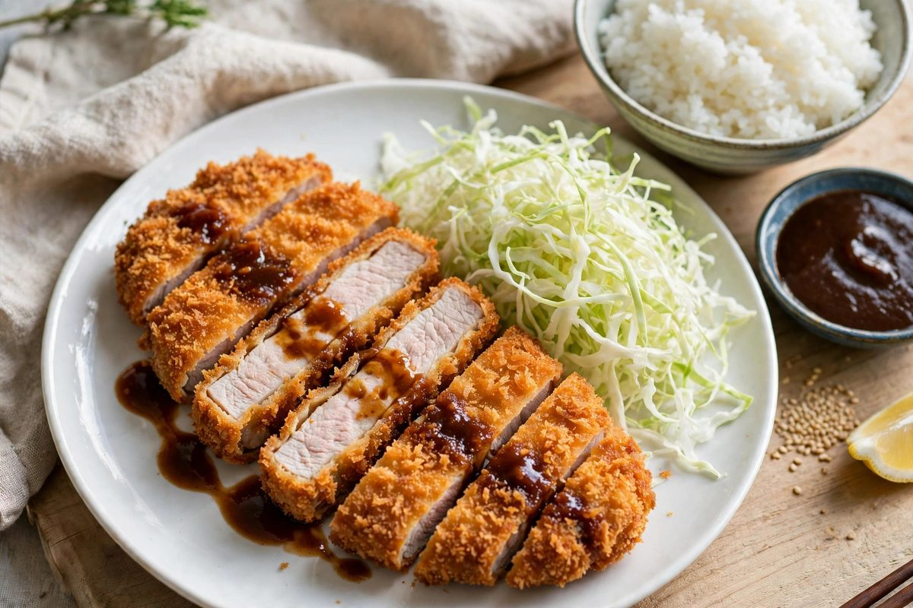

Tonkatsu — Crisp Japanese Pork Cutlet
How to make tonkatsu with a light, crisp panko crust, plus tonkatsu sauce and serving ideas.
What tonkatsu is
Tonkatsu is a breaded, deep-fried pork cutlet with a crisp golden crust and a juicy centre. It is one of Japan's most popular comfort foods, served with shredded cabbage, rice, miso soup, and a thick, fruity tonkatsu sauce. The dish came from European cutlets in the late nineteenth century, but the Japanese version is distinct: the coating is panko breadcrumbs, which are larger and lighter than Western crumbs, and the pork is usually loin or fillet. Good tonkatsu is about contrast — a shattering crust against tender meat — and the method is simple once the details are right.
Choosing and preparing the pork
Pork loin is the classic cut, with a little fat for flavour; fillet is leaner and more tender. Cut the pork about two centimetres thick, and score the fat edge and the thin membrane so the cutlet does not curl during frying. Season lightly with salt and pepper. If the cutlet is uneven, press it gently to an even thickness. Dry the surface with kitchen paper before breading, because moisture stops the coating sticking. One cutlet per person, about 150 grams, is a normal serving.
The panko coating
Coat in three stages: plain flour, beaten egg, then panko. Dust off excess flour, dip in egg, and press the panko on firmly so it covers the whole cutlet. Use coarse panko, not fine breadcrumbs, because the large flakes give the characteristic light crunch. Let the coated cutlets rest for five minutes before frying so the coating sets. Do not press the panko too hard or it crushes; a firm, even press is enough. Fresh panko, rather than stale, makes a noticeable difference to the final crunch.
Frying
Heat a neutral oil to about 170 to 180 degrees Celsius in a deep pan, with enough oil to come halfway up the cutlet. Fry for about three to four minutes per side, until deep golden and cooked through. Do not crowd the pan, because that drops the oil temperature and makes the coating greasy. Drain the cutlets upright on a rack for a minute, then rest them for two minutes before slicing. Cutting too soon lets the juices run out. Slice into strips about two centimetres wide, keeping the shape of the cutlet, so it looks neat on the plate.
Tonkatsu sauce and serving
Tonkatsu sauce is a thick, sweet-savoury sauce, and good bottled versions are widely available. A quick homemade version mixes tomato ketchup, Worcestershire sauce, soy sauce, and a little sugar. Serve the sliced cutlet beside a mound of finely shredded cabbage with a wedge of lemon, steamed rice, and miso soup. The cabbage is not a garnish; its freshness cuts the richness of the fried pork. Mustard, especially hot Japanese mustard, is a traditional accompaniment and adds a sharp lift.
Variations and leftovers
The same method works for chicken (chicken katsu), fish, or aubergine, and the sauce and cabbage stay the same. Tonkatsu is also the base for katsudon, where the cutlet is simmered with egg and onion over rice, and for katsu curry, where it is served with Japanese curry sauce. Both are worth trying once you can fry a good cutlet. Leftover tonkatsu is best reheated in a hot oven rather than a microwave, which softens the crust. For a lighter version, bake the coated cutlets, though the crust will not be quite as crisp as fried.
Frequently Asked Questions
What is panko, and can I use normal breadcrumbs?
Panko are coarse Japanese breadcrumbs made from crustless bread. They give a lighter, crunchier coating than fine breadcrumbs. Normal breadcrumbs work, but the result is denser and less crisp.
How do I know the pork is cooked through?
A two-centimetre loin cutlet fried for three to four minutes per side at 170 to 180 degrees is normally cooked through. Cut into the thickest part to check: the meat should be white with clear juices.
Can I bake tonkatsu instead of frying?
Yes. Spray the coated cutlets with oil and bake at 200 degrees for about 20 minutes, turning once. The crust will be less crisp than fried, but it is a good lighter option.